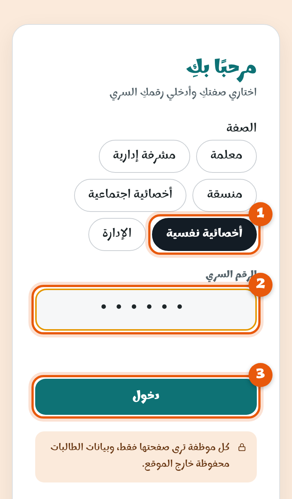

1
افتحي المنصة وسجّلي الدخول
افتحي الرابط:
althasair.github.io/namoos
- 1اختاري صفتكِ: أخصائية نفسية.
- 2اكتبي رقمكِ السري الذي استلمتِه من الإدارة.
- 3اضغطي دخول.
رقمكِ السري خاص بكِ، لا تشاركيه مع أحد.
